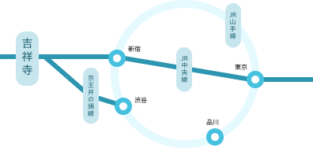

ACCESS of KICHIJYOJI
吉祥寺ってどこ？

東京都武蔵野市。
新宿と三鷹の間に位置し、三鷹市と隣接。
駅から商店街と井の頭恩賜公園が徒歩圏でつながるコンパクトな街。
吉祥寺へのアクセス方法
電車
- ・JR中央線（快速）：新宿 → 吉祥寺 約15–20分
- ・JR中央・総武線（各停）：御茶ノ水／中野方面から直通
- ・京王井の頭線（急行）：渋谷 → 吉祥寺 約15–20分
空港から
- ・羽田：京急→品川→山手線→新宿→JR中央線（約60–75分）
- ・成田：成田エクスプレス→新宿→JR中央線（約90–110分）